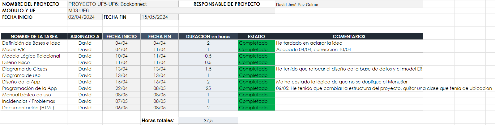

Cronograma del proyecto
Contextualización Cronograma
En el cronograma podemos observar los siguientes campos: El nombre del proyecto, mi nombre como responsable, el módulo y la UF a la que procede y la fecha inicial y final que tenemos para terminar el proyecto.

A partir de este cronograma, podemos sacar esta información:
| Tarea | Fecha Inicio | Fecha Final | Duración (Horas) | Comentarios |
|---|---|---|---|---|
| Definición de Bases e Idea | 4/04/2024 | 4/04/2024 | 2 | He tardado en aclarar la idea |
| Model E/R | 4/04/2024 | 11/04/2024 | 1 | Acabado 04/04, corrección 10/04 |
| Modelo Lógico Relacional | 10/04/2024 | 11/04/2024 | 0.5 | |
| Diseño Físico | 11/04/2024 | 11/04/2024 | 0.5 | |
| Diagrama de Clases | 13/04/2024 | 13/04/2024 | 1.5 | He tenido que retocar el diseño de la base de datos y el model ER |
| Diagrama de uso | 13/04/2024 | 13/04/2024 | 1 | |
| Diseño de la App | 15/04/2024 | 16/04/2024 | 2 | Me ha costado la lógica de que no se duplique el MenuBar |
| Programación de la App | 22/04/2024 | 8/05/2024 | 25 | 06/05: He tenido que cambiar la estructura del proyecto, quitar una clase que tenía de ubicacion |
| Manual básico de uso | 8/05/2024 | 8/05/2024 | 1 | |
| Incidencias / Problemas | 7/05/2024 | 8/05/2024 | 1 | |
| Documentación (HTML) | 6/05/2024 | 8/05/2024 | 2 |
Ya dentro del cronograma en si mismo, podemos observar el estado de cada tarea, las fechas en las que han sido empezadas y finalizadas, las horas que han durado en ser realizadas, el estado de las mismas y por último los comentarios que creíamos relevantes.
En mi caso, dichos comentarios eran en su mayoría problemas a la hora de seguir el proyecto, para así tenerlos documentados. En el apartado de incidencias mostraré más detalladamente dichos problemas y las soluciones que he encontrado.
En total, el trabajo me ha costado aproximadamente 37,5 horas, aunque probablemente fuesen más ya que honestamente no pude tomar la cuenta de todas las horas que pasé programando.